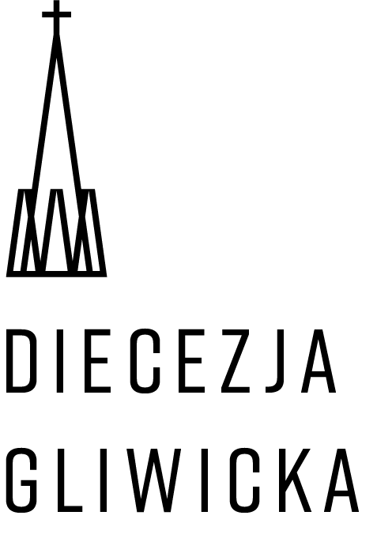
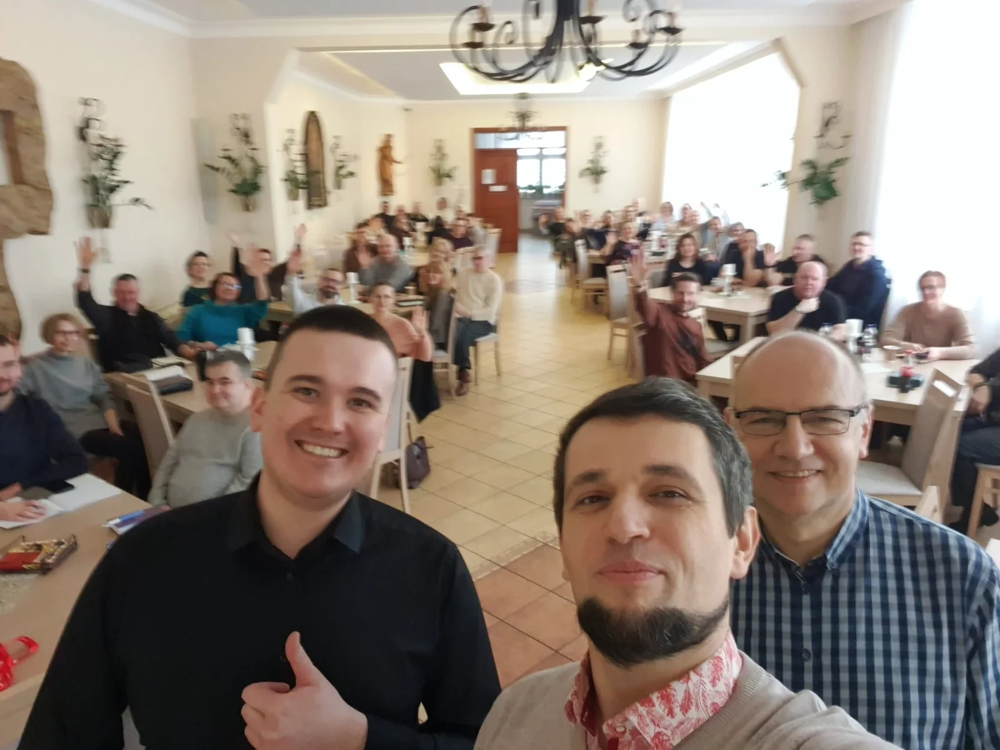

Sławomir
Koordynator RCA Lubecko, szkolenia i wsparcie nowych zespołów
O nas
Regionalne Centrum Alpha w Lubecku działa w ramach SNE Lubecko, przy parafii WNMP w diecezji gliwickiej. Promujemy Alpha, szkolimy zespoły i wspieramy pierwsze edycje w nowych miejscach.
Nasz zespół
Łączy nas doświadczenie kolejnych edycji Alpha i pragnienie, żeby parafie otrzymały proste narzędzie docierania do osób poszukujących.
Koordynator RCA Lubecko, szkolenia i wsparcie nowych zespołów

Alpha, szkolenia i rozwój działań regionalnych

Alpha i Alpha dla młodzieży

Zespół Regionalnego Centrum Alpha w Lubecku

Zespół RCA i współpraca w środowisku Alpha

Co robimy?
SNE Lubecko
RCA działa przy parafii Wniebowzięcia Najświętszej Maryi Panny w Lubecku, w diecezji gliwickiej, oraz w środowisku Sanktuarium Matki Bożej Lubeckiej. Lokalna wspólnota jest miejscem własnych edycji, szkoleń i spotkań dla zespołów z innych parafii.
To doświadczenie pozwala nam mówić o Alpha praktycznie: z perspektywy stołu, zaproszeń, ekipy i kolejnych edycji.

Nasz region
Jesteśmy częścią lokalnego Kościoła, a jednocześnie działamy w regionie, w którym spotykają się trzy diecezje.
zasięg podstawowy: 50 km
Tu jesteśmy
Lubecko jest miejscem naszych własnych edycji, spotkań zespołu i szkoleń. Działamy przy Sanktuarium Matki Bożej Lubeckiej — parafii Wniebowzięcia Najświętszej Maryi Panny.

Diecezja gliwickaNasza podstawowa przestrzeń działania obejmuje parafie w promieniu 50 km od Lubecka.
Tu działa SNE Lubecko, tu prowadzimy własne Alpha i tu zapraszamy zespoły na szkolenia oraz Dni Alpha.
To nasza diecezja i podstawowe środowisko posługi Regionalnego Centrum Alpha.
W sąsiedztwie są diecezje opolska — współpracująca z gliwicką — oraz częstochowska. Ten regionalny kontekst otwiera przestrzeń do wzajemnego wsparcia.

Zasięg działania
Nasza podstawowa przestrzeń działania obejmuje parafie w promieniu 50 kilometrów od Lubecka. Dzięki temu możemy budować relację, wracać do zespołu i praktycznie wspierać pierwsze kroki.
Doświadczeniem dzieliliśmy się również podczas szkoleń w Legnicy i Jeleniej Górze.
Zobacz miejsca, którym towarzyszymy
Współpraca
Uczestniczymy w spotkaniach Regionalnych Centrów Alpha, wydarzeniach Alpha Polska i międzynarodowej wymianie doświadczeń. Współpracujemy także z innymi RCA, parafiami i wspólnotami ewangelizacyjnymi.
Najważniejsze pozostaje jednak konkretne miejsce i konkretni ludzie, którzy pytają: jak zacząć u nas?
Poznajmy się